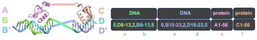
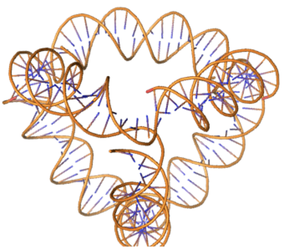
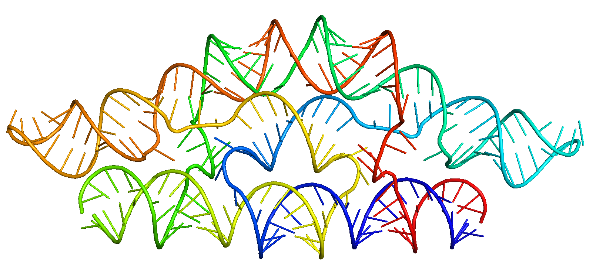

RFDpoly usage examples¶
This document has several examples for how to use RFDpoly for RNA and DNA generation including:
Unconditional generation of multiple biopolymers together
Motif scaffolding tasks with multiple polymers
Control of base-pairing secondary structure to design RNA pseudoknots or (mini) DNA origami
Note
If you come across this error:
bash Could note locate file '/current/working/directory/test_data/DBP035.pdb'. Tried...
You can fix it via the addition of
bash inference.input_pdb=/path/to/RFDpoly/rf_diffusion/test_data/DBP035.pdb
to the end of your list of configuration options.
Table of Contents¶
Example 2: Example 2: Unconditional design of one protein chain and two DNA chains
Example 3: RNA riboswitch design with conditioning from Eterna puzzle structure string
Example 5: DNA–protein scaffolding, inpaint two DNA chains and one protein chain
Example 8: Control of RNA tertiary structure with multi-contact specification
Example 9: Pseudocyclic symmetry using procedurally generated base-pair patterning
Example 10: De novo Holliday junctions using strand exchange
Example 1: Unconditional RNA generation¶
apptainer run --nv /path/to/SE3nv.sif /path/to/RFDpoly/rf_diffusion/run_inference.py \
--config-name=multi_polymer \
diffuser.T=50 \
inference.num_designs=5 \
'contigmap.contigs=["90"]' \
contigmap.polymer_chains=['rna'] \
inference.output_prefix='./demo_outputs/RNA_uncond_standard_settings' \
inference.ckpt_path=/path/to/RFDpoly/weights/train_session2024-07-08_1720455712_BFF_3.00.pt
Example 2: Unconditional design of one protein chain and two DNA chains¶
apptainer run --nv /path/to/SE3nv.sif /path/to/RFDpoly/rf_diffusion/run_inference.py \
--config-name=multi_polymer \
diffuser.T=50 \
inference.num_designs=5 \
"contigmap.contigs=[20\ 20\ 75]" \
'contigmap.polymer_chains=["dna","dna","protein"]' \
inference.output_prefix='./demo_outputs/DNA_prot_uncond_standard_settings'
inference.ckpt_path=/path/to/RFDpoly/weights/train_session2024-07-08_1720455712_BFF_3.00.pt
Example 3: RNA riboswitch design with conditioning from Eterna puzzle structure string¶
Puzzle source: JR Openknot4 Week6 4RZD
((((...............))))(((((((((........))))))))).......(((((((........)))))))(((...........))).....
Because Hydra cannot use parentheses in command-line arguments, replace “(” and “)” with “5” and “3”.
apptainer run --nv /path/to/SE3nv.sif /path/to/rf_diffusion/run_inference.py \
--config-name=multi_polymer \
diffuser.T=50 \
inference.num_designs=5 \
'contigmap.contigs=["100"]' \
contigmap.polymer_chains=['rna'] \
scaffoldguided.target_ss_string='5555...............3333555555555........333333333.......5555555........3333333555...........333.....' \
inference.output_prefix='./demo_outputs/RNA_eterna_cond_standard_settings'
inference.ckpt_path=/path/to/RFDpoly/weights/train_session2024-07-08_1720455712_BFF_3.00.pt
Try this out on more Eterna puzzles! To get the ss-string for a given puzzle, start playing, then right-click → “Copy Structure” or choose it from the menu in the upper left corner. BUT WAIT! What if you want to insert multiple pseudoknots into your design or insert them into specific positions of certain chains? You can provide a list of secondary structure strings as follows:
scaffoldguided.target_ss_string_list=[\'B1-90:.5555555555555555555..ffffff.33333555....333555....33333333333333333555555..tttttt.333333.\',\'A116-205:.5555555555555555555..ffffff.33333555....333555....33333333333333333555555..tttttt.333333.\']
where the ranges specify chains and indices of pseudoknot insertion locations in the output contigs.
Example 4: DNA–protein scaffolding, inpaint two DNA chains¶
The argument inference.ij_visible controls which motifs listed in the contigs have their relative
orientations locked during inference (credit to Dr. David Juergens for this intuitive system). In the following
contact map, lowercase letters denote motifs from the input PDB in the order they occur in the contigs
(not to be confused with uppercase chain IDs):
10,D8-13,6,B8-13,10\ 10,B18-23,6,D18-23,10\ A1-56,0\ C1-56,0
a. b. c. d. e. f.
Motifs A1-56, B8-13, and B18-23 (b,c,e) form the first DNA+binder group “bce”, while C1-5, D8-13, and D18-23 (a,d,f) form “adf”. The relative orientations of “bce” and “adf” can now vary during inference.
/path/to/SE3nv.sif /path/to/rf_diffusion/run_inference.py \
--config-name=multi_polymer \
diffuser.T=50 \
inference.num_designs=5 \
"contigmap.contigs=['10,D8-13,6,B8-13,10 10,B18-23,6,D18-23,10 A1-56,0 C1-56,0']" \
inference.ij_visible='bce-adf' \
"contigmap.polymer_chains=[dna,dna,protein,protein]" \
inference.input_pdb='path/to/RFDpoly/test_data/combo_DBP009_DBP010_DBP011_with_DNA_v2.pdb' \
inference.output_prefix='./demo_outputs/DNA_binders_scaffolding_test1_standard_settings' \
inference.ckpt_path=/path/to/RFDpoly/weights/train_session2024-07-08_1720455712_BFF_3.00.pt
Example 5: DNA–protein scaffolding, inpaint two DNA chains and one protein chain¶

Here, contigmap.polymer chains lists only three chains because binding proteins are merged into one.
/path/to/SE3nv.sif /path/to/rf_diffusion/run_inference.py \
--config-name=multi_polymer \
diffuser.T=50 \
inference.num_designs=5 \
"contigmap.contigs=['5,D8-13,2,B8-13,5 5,B18-23,2,D18-23,5 A1-52,90,C4-56,0']" \
inference.ij_visible='bce-adf' \
contigmap.polymer_chains=[dna,dna,protein] \
scaffoldguided.target_ss_pairs="['A1-24,B1-24']" \
inference.input_pdb='path/to/RFDpoly/rf_diffusion/test_data/combo_DBP009_DBP010_DBP011_with_DNA_v2.pdb' \
inference.output_prefix='./demo_outputs/DNA_binders_scaffolding_test2_standard_settings' \
inference.ckpt_path=/path/to/RFDpoly/weights/train_session2024-07-08_1720455712_BFF_3.00.pt
The new argument scaffoldguided.target_ss_pairs enforces base-pairing of polymer ranges (here A1-24 B1-24). Each corresponds to the two full DNA contigs (A,B) in the outputs, each of length 24.
Example 6: DNA origami with symmetric denoising¶
The scaffoldguided.target ss pairs argument specifies paired ranges in the design; both ranges in each pair must have equal length. The first is 5→3, the second 3→5.
/path/to/SE3nv.sif /path/to/rf_diffusion/run_inference.py \
--config-name=multi_polymer \
diffuser.T=50 \
inference.num_designs=5 \
"contigmap.contigs=['60 60 60 60']" \
"contigmap.polymer_chains=[dna,dna,dna,dna]" \
scaffoldguided.target_ss_pairs="['A1-20,B1-20','A21-40,C21-40','A41-60,D41-60','B21-40,D21-40','B41-60,C41-60','C1-20,D1-20']" \
inference.symmetry='d2' \
inference.output_prefix='./demo_outputs/DNA_origami_standard_settings' \
inference.ckpt_path=/path/to/RFDpoly/weights/train_session2024-07-08_1720455712_BFF_3.00.pt
Example 7: RNA design with triple helix¶
Just as in the previous example, we can use base-paired ranges of sequence to control RNA topology. By default, paired regions are antiparallel, but specific orientations can be assigned (e.g., triple helices with parallel/antiparallel combinations).

/path/to/SE3nv.sif /path/to/rf_diffusion/run_inference.py \
--config-name=multi_polymer \
diffuser.T=50 \
inference.num_designs=5 \
contigmap.contigs=['75'] \
"contigmap.polymer_chains=[rna]" \
scaffoldguided.target_ss_pairs="['A5-20,A55-70','A55-70,A30-45']" \
scaffoldguided.target_ss_pair_ori="[P,A]" \
inference.output_prefix='./demo_outputs/Triple_helix_test' \
inference.ckpt_path=/path/to/RFDpoly/weights/train_session2024-07-08_1720455712_BFF_3.00.pt
Each orientation in the list scaffoldguided.target_ss_pair_ori corresponds to the element at the same index in scaffoldguided.target_ss_pairs.
Example 8: Control of RNA tertiary structure with multi-contact specification¶

We can “staple” distal loops in RNA pseudoknots together by specifying regions of multi-base contacts using scaffoldguided.force_multi_contacts. Secondary-structure strings cannot encode beyond simple two-base pair configurations, so this feature enables higher-order tertiary interactions. We can also force loop placement via scaffoldguided.force_loops_list.
/path/to/SE3nv.sif /path/to/rf_diffusion/run_inference.py \
--config-name=multi_polymer \
diffuser.T=50 \
inference.num_designs=5 \
"contigmap.contigs=['80']" \
"contigmap.polymer_chains=[rna]" \
scaffoldguided.target_ss_pairs="['A5-15,A25-35','A45-55,A65-75']" \
scaffoldguided.force_multi_contacts="['A19,A61,A20','A59,A21,A60']" \
scaffoldguided.force_loops_list="['A38-42']" \
inference.output_prefix='./demo_outputs/loop_touch_test' \
inference.ckpt_path=/path/to/RFDpoly/weights/train_session2024-07-08_1720455712_BFF_3.00.pt
Example 9: Pseudocyclic symmetry using procedurally generated base-pair patterning¶
Below are arguments used to create pseudo-symmetry in a single chain forming a cyclic-symmetric shape (e.g., C2 pseudocycle).
/path/to/SE3nv.sif /path/to/rf_diffusion/run_inference.py --config-name=multi_polymer \
inference.ckpt_path='/path/to.RFDpoly/weights/train_session2024-07-08_1720455712_BFF_3.00.pt' \
diffuser.T=50 \
inference.num_designs=5 \
"contigmap.contigs=['240']" \
inference.pseudo_symmetry='c2' \
inference.n_repeats=2 \
scaffoldguided.target_ss_pairs="['A4-5,A237-238','A7,A236','A11-12,A230-231','A18-27,A137-146','A44-47,A72-75','A49-44,A64-69','A63-69,A49-55','A72-75,A44-47','A90-99,A197-206','A110-112,A130-132','A115-115,A127-128','A117-118,A124-125','A124-125,A117-118','A127-128,A115-116','A130-132,A110-112','A137-140,A24-27','A141-146,A18-23','A164-168,A191-195','A169-175,A183-189','A183-189,A169-175','A191-195,A164-168','A197-206,A90-99','A210-214,A82-86','A215-219,A77-81','A230-231,A11-12','A236,A7','A237-238,A4-5']" \
contigmap.polymer_chains=['rna'] \
inference.output_prefix='./outputs_2025-02-03/pC2_test01__BFF_3.00' \
Example 10: De novo Holliday junctions using strand exchange¶

We can use symmetry and strand exchange to design Holliday-junction-style complexes. Chain
and index specifications in scaffoldguided.target_ss_pairs refer to chain IDs and indices in the
output structure defined by contig topology.
/path/to/SE3nv.sif /path/to/rf_diffusion/run_inference.py \
--config-name=multi_polymer \
diffuser.T=50 \
inference.symmetry='c2' \
contigmap.inpaint_seq=['D60','D57','D58','D11','D15','D19','D8','D61','D18','A9','A59','A62','A8','A4','A5'] \
inference.num_designs=5 \
inference.ckpt_path='/path/to/RFDpoly/weights/train_session2024-07-08_1720455712_BFF_3.00.pt' \
"contigmap.contigs=['A1-61,60,D14-65 15,B6-12,4,F1-8,15 15,E7-14,4,C4-10,15 A1-61,60,D14-65 15,B6-12,4,F1-8,15 15,E7-14,4,C4-10,15']" \
inference.ij_visible='acf-bde-gil-hjk' \
"contigmap.polymer_chains=['protein','dna','dna','protein','dna','dna']" \
scaffoldguided.target_ss_pairs="['B1-10,F40-49','B40-49,F1-10','B16-34,C16-34','E16-34,F16-34','C1-10,E40-49','C40-49,E1-10']" \
inference.input_pdb='/path/to/RFDpoly/rf_diffusion/test_data/DBP35opt_DBP48.pdb' \
inference.output_prefix='./outputs_2025-02-03/DBP_scaffolding_test06__BFF_3.00'
Example 11: Sequence specification and sequence design¶
We can now specify the sequence of our structures to be whatever we want! Additionally, the model has been trained to do sequence prediction, so we can decode a sequence during the denoising trajectory (this allows us to generate outputs with all of the base atoms rendered for NA design, as well as nice sidechain interactions for protein design). The default behavior throughout RFdiffusion is to keep the sequence of diffused regions masked during the trajectory, even if the outputs seem to have residue labels. RoseTTAfold must “see” sequence labels in order to generate sidechains, so I added a flag, inference.update_seq_t=True, which allows the model to see either a user-specified sequence or the model’s predicted sequence from the previous timestep. This gives us sidechains, and is a unique addition to RFdiffusion-based tools. There are two ways to control the sequence info during a trajectory:
Turn on full-sequence visibility at some timestep towards the end of the trajectory, using inference.show_seq under t=15.
Gradually decode a random selection of positions at each step below some point in the trajectory, using diffuser.aa_decode_steps=40. Both methods work nicely, so test them both during your design process. Examples using both methods are shown below.
Example 11A: Unconditional design of RNA and protein¶
While specifying the RNA sequence, letting the model design the protein sequence, and gradually revealing various sequence positions over the course of the last 40 steps:
/path/to/SE3nv.sif /path/to/rf_diffusion/run_inference.py --config-name=multi_polymer \
diffuser.T=50 \
inference.num_designs=3 \
"contigmap.contigs=['43 20 75']" \
"contigmap.polymer_chains=['rna','rna','protein']" \
inference.set_sequence="['A1-43:GGAUGUACUACCAGCUGAUGAGUCCCAAAUAGGACGAAACGCC','B1-20:GGCGUCCUGGUAUCCAAUCC']" \
inference.update_seq_t=True \
diffuser.aa_decode_steps=40 \
inference.ckpt_path='/path/to/RFDpoly/weights/train_session2024-07-08_1720455712_BFF_3.00.pt' \
inference.output_prefix='./demo_outputs/RNA-prot_seq-spec_and_seq-design_standard_settings'
Further Reading¶
We can use several symbol pairs to denote which of two bases being paired is 5’-led or 3’-led. Unfortu- nately, due to Hydra’s constraints on command-line tokens, we cannot use standard DBN conventions and must exclude the following symbols: (, ), [, ], {, }, <, >. However, the following symbols can be used instead to control hierarchical pseudoknot specification:
5’-led |
3’-led |
Explanation |
|---|---|---|
5 |
3 |
(5’→3’ and 3’→5’) |
i |
j |
(index convention) |
f |
t |
(“from” and “to”) |
b |
e |
(“begin” and “end”) |
A |
a |
(“begin” and “end”) |
The code accepts any of these symbols to denote base pairs using the dot-bracket-notation paradigm. However, Hydra cannot parse parentheses, braces, or brackets in command-line arguments. If your topology requires multiple distinct open/close pairs (as with pseudoknots), simply replace symbols as long as they remain distinct.
Polymer Contigs¶
If you’ve gotten this far, you’ve probably already seen the arguments such as:
contigmap.polymer_chains="['dna','dna','protein']"
To control polymer classes generated, specify the polymer type for each chain in the contig line;
otherwise, the model makes assumptions that may yield odd results (e.g., threading nucleic backbones
through protein motifs). Future updates may automate this behavior, but for now specify polymer
chains manually.
A Note on the Different Contigs¶
Different configs and their intended use cases:
multi_polymer: main config; handles motif scaffolding and secondary-structure conditioning.RNA_ss_cond: similar to above, but loads a checkpoint fine-tuned on more RNA samples.RNA_uncond: older configuration predating SS-conditioning. Produces diverse unconditional designs but with less designable backbones.
In practice, multi_polymer works best across all polymer classes and tasks — truly a “one-model-
to-rule-them-all” scenario.
A Note on Checkpoints¶
Many checkpoints are available, but the multi polymer config generally suffices. Alternative checkpoints can be found at:
/rf_diffusion/config/inference
Arguments that Specify Residues¶
Chain–resi pairs (e.g., “A23”) specify that something should
happen to a given residue. Sometimes we use this to refer to the chain–resi pairing in the input PDB
(for example, in the contigmap.contigs argument). Other times we refer to a location within the
newly generated structure (for example, in scaffoldguided.target_ss_pairs).
A Note on PyMOL’s Cartoon Representation¶
Since RFDpoly is based on the original implementation of RFdiffusion, its outputs lack sidechains in non-motif (designed) regions. This is particularly problematic for nucleic acids: PyMOL refuses to render nucleic acid cartoons if sidechains are missing. Therefore, Andrew recommends inspecting outputs in ChimeraX or using an alternative PyMOL scheme to visualize NA outputs.
If outputs seem invisible in PyMOL, it’s not a bug, just a rendering limitation.
Questions?¶
If you have any questions about RFDpoly, open a Discussion on GitHub or post in the Rosetta Commons Slack (Commons members only). If you have issues running any of the examples, open an Issue on GitHub.